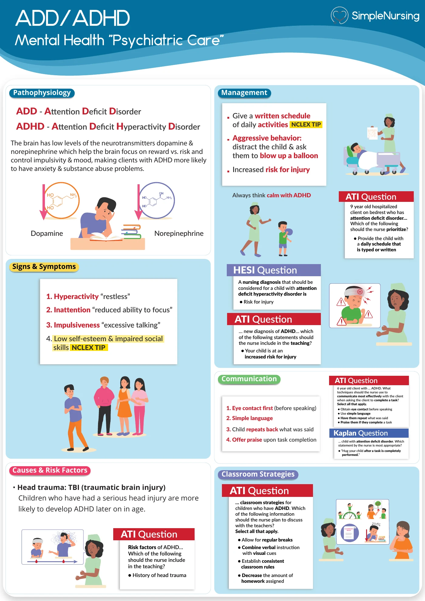
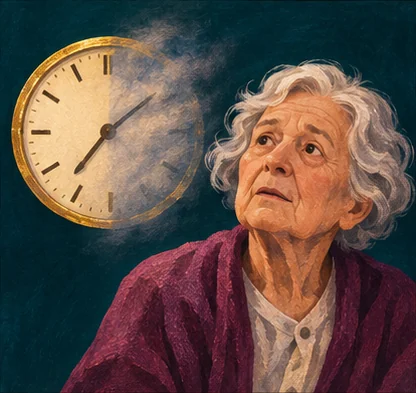
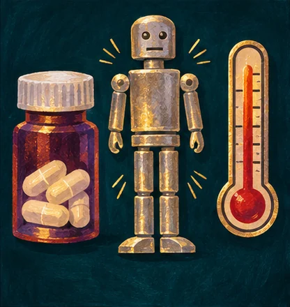

How can the nurse prepare an autistic patient for a change in routine?
- Think…
- Use the patient’s preferred communication method and preview one step at a time.
NUR 175 · Final · Simple exam guide
Cumulative final · New material in Modules 11–12 and the Modules 13/14 pharmacology reference.

Begin with somatic and neurodevelopmental disorders, disruptive behavior, cognition and psychopharmacology. Then revisit the safety decisions from Exams 1–3.







A. Investigate acute delirium and possible medical causes.
The rapid change in attention differs from the patient’s baseline.
B. Escalate for urgent evaluation of neuroleptic malignant syndrome.
This cluster can indicate a life-threatening medication reaction.